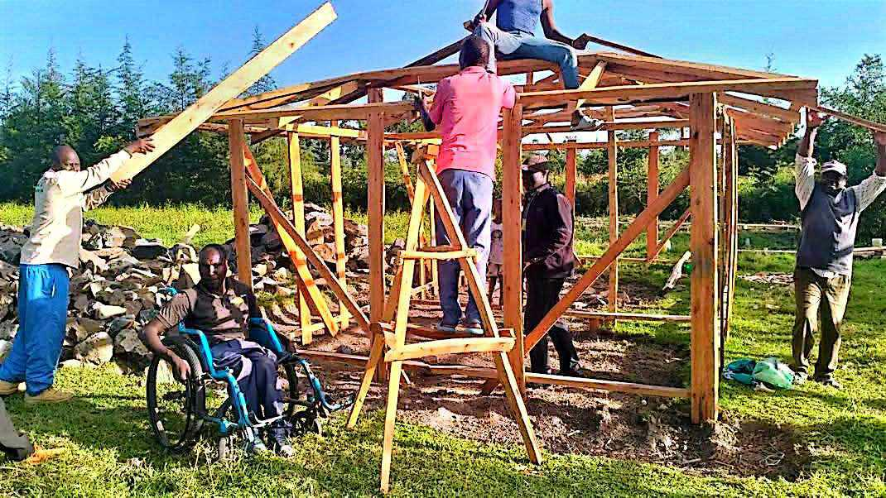
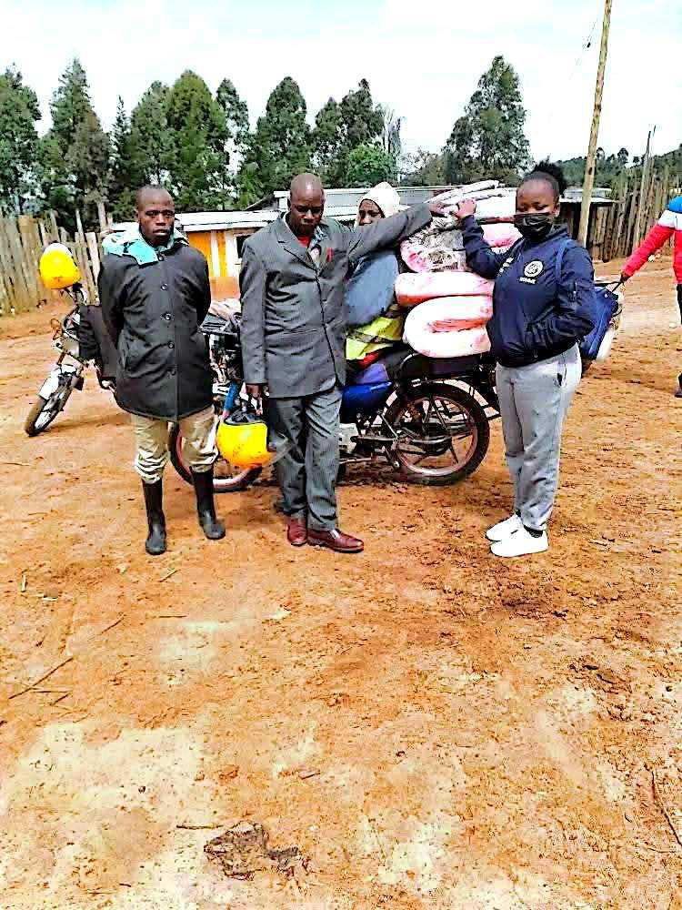

Evidence beyond this website
Media & public record.
External reporting lets visitors independently explore the story. More interviews, articles and videos will be added as they are verified.
PRESS
10 September 2025 · Nation Media Group
Restoring hope and dignity to persons living with disabilities
A detailed feature documenting Daniel's humanitarian work, education journey, partnerships, assistive-device deliveries and the operational challenges of reaching beneficiaries.
Read the published feature ↗TV / RADIO
TUKO
Television / radio interview
Watch Daniel Mutai's interview on TUKO.
Watch the TUKO interview ↗PHOTOS
Portfolio archive
Selected project photographs
Photographs already supplied for this portfolio.






For journalists & researchers
Requesting an interview or further material.
For interview requests, fact-checking enquiries or further material, use the media contact option on the Contact page.